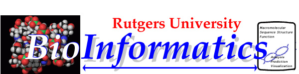

The coordinated Laboratory comprises overlapping groups of
of investigators in nucleic acid and protein structure prediction,
and in knowledge-based theory and hypothesis formation. It
is centered around specific investigations of biochemical
structure determination and prediction using the Nucleic Acid Database
developed at Rutgers by Dr. Berman and data from several Protein Databanks,
as well as from specific crystallographic and advanced multimodality
NMR experiments.
From a Computer Science and Mathematical perspective the
focus is on the investigation of methods of knowledge representation,
scientific language (symbolic and visual), problem solving strategies, and
hypothesis and theory formation methodologies. It builds on work
carried out in the areas of knowledge-based modeling, inferencing and
machine learing by Professors Kulikowski, Berman, and Montelione,
and on work on structuring biological problem solving and learning from
databases carried out by Professors Gelfand and Kister.
Methodologically, we propose to investigate the following:
- Representation of crystallographic data structures for nucleic acids
to better connect with sequence information, and permit more
flexible hypothesis and theory formation and data discovery.
- Representation of protein data structures to systematically
apply constraints from heterogeneous knowledge sources in the
determination of protein structure.
- Development of mathematical-statistical models for the above to improve
the comparative analysis over large databases of
sequences, secondary, and 3 dimensional structures.
- Formulation of expert problem solving strategies for combining
visual and analytical hypothesis and theory formation - using
abstracted sketches as well as representations of actual data
and hypotheses.
- Development of structured machine learning methods that, combined with
prior expert knowledge of a problem permits focusing on
the formulation of data abstraction hypotheses (database
mining) and the match with domain knowledge-content in
specific areas of crystallographic or NMR analysis of
nucleic acid and protein structures.
- Developing intelligent query and retrieval strategies from
large databases based on the experimental design requirements of
a particular study which can be represented as a cycle of
partial hypothesis formulation, abstraction, plan formation,
execution, and testing, with critical feedback from expert investigators
at each stage
- Development of distributed collaborative software environments
using advanced human-machine interfaces to facilitate remote
collaborative scientific exchanges and problem solving.
(collaborations with CAIP and RUCCS are envisioned in this area).